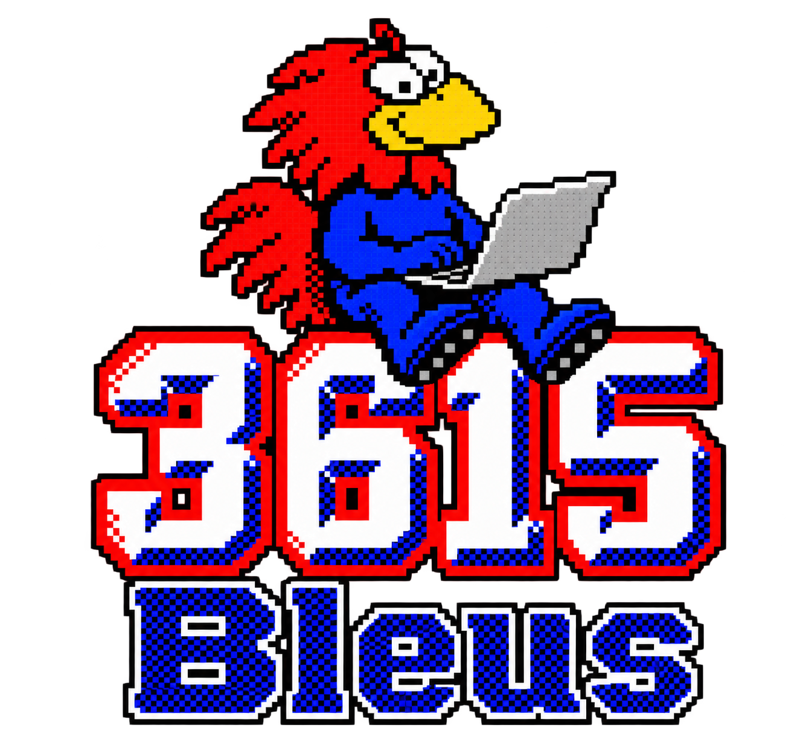

Mentions légales
À propos · confidentialité · cookies · sources & crédits
Mise à jour · 24 septembre 20261 · À propos, sources & crédits
3615 Bleus est un projet éditorial indépendant consacré aux sélections françaises de football.
Objet du site
3615 Bleus rassemble, structure et relie des données concernant les équipes de France de football : joueurs et joueuses, sélections, matchs, compétitions, adversaires, staff, arbitres principaux, stades, maillots et statistiques. Les données peuvent être importées depuis des fournisseurs externes, puis vérifiées ou corrigées manuellement dans la base éditoriale.
3615 Bleus n'est pas un site officiel de la Fédération Française de Football, de l'UEFA, de la FIFA ni d'une autre fédération ou organisation citée. Les noms, marques, blasons, logos et contenus de tiers restent la propriété de leurs titulaires respectifs.
Sources institutionnelles et officielles
Bases historiques, statistiques et documentaires utilisées
Fournisseur automatisé du calendrier et du live
Les données TheSportsDB sont considérées comme des données source : une correction éditoriale manuelle effectuée dans 3615 Bleus reste prioritaire pour le champ concerné.
Sources ponctuelles et crédits techniques
Des ouvrages, articles, diffuseurs, archives audiovisuelles et documents peuvent également être cités au niveau d'une fiche précise. Dans ce cas, la référence propre à la donnée ou à la tuile fait foi et complète la présente liste consolidée.
2 · Mentions légales
Informations relatives à l'édition, à l'hébergement et aux droits de propriété intellectuelle.
| Nom du service | 3615 Bleus |
|---|---|
| Nature | Projet éditorial et base documentaire indépendante autour des sélections françaises de football. |
| Éditeur | À compléter par l'éditeur du site. |
| Directeur de publication | À compléter par l'éditeur du site. |
| Contact | Le formulaire / outil de signalement intégré au site peut être utilisé pour signaler une erreur ou demander une correction. Ajouter ici une adresse e-mail publique dédiée si souhaité. |
| Hébergement web | Netlify, Inc. — 101 2nd Street, San Francisco, CA 94105, États-Unis. |
| Base de données / authentification | Supabase Pte. Ltd. — service utilisé pour la base PostgreSQL, l'authentification et certains fichiers de l'application. |
Propriété intellectuelle
La structure éditoriale de 3615 Bleus, ses développements spécifiques, ses textes originaux et son identité graphique propre ne confèrent aucun droit sur les marques, compétitions, emblèmes, photographies, vidéos ou bases de données appartenant à des tiers. Sauf mention contraire, les éléments de tiers sont cités ou affichés à des fins d'identification, de documentation et d'information.
Les statistiques factuelles ne sont pas présentées comme une reproduction intégrale d'une base tierce : elles peuvent être rapprochées, vérifiées, enrichies et reliées à plusieurs sources. Les éventuelles erreurs peuvent être signalées depuis le site.
Responsabilité éditoriale
Malgré les contrôles et les mécanismes de correction manuelle, une donnée sportive peut évoluer ou comporter une erreur de source. Les informations présentées sont fournies à titre documentaire. En cas de divergence, les documents officiels et les sources primaires priment.
3 · Confidentialité, données personnelles & cookies
Ce que 3615 Bleus enregistre actuellement et dans quel but.
Données pouvant être traitées avec un compte
- données d'authentification gérées par Supabase Auth, notamment l'adresse e-mail ;
- profil 3615 Bleus : pseudo, prénom, rôle, statut de présence et préférences de personnalisation ;
- contributions éditoriales : corrections, tags, signalements et autres actions rattachées au compte lorsque la fonction est utilisée ;
- messages et interactions du mur de l'équipe lorsque ces fonctions sont utilisées.
Ces données servent au fonctionnement du compte, à la synchronisation des préférences et aux fonctions collaboratives. Elles ne sont pas destinées à être vendues à des annonceurs.
Stockage local dans le navigateur
Le site utilise le stockage local du navigateur pour certaines préférences et fonctions : largeur / densité de l'interface, raccourcis, préférences de profil, brouillons ou compositions sauvegardées localement, mode de démonstration et informations techniques nécessaires à la session. Ce stockage n'est pas un cookie publicitaire et peut être effacé depuis les réglages du navigateur.
Services externes sollicités
- Supabase : authentification, base de données, stockage et synchronisation du contenu ;
- Netlify : hébergement du site et exécution des fonctions serveur ;
- TheSportsDB : données sportives récupérées par les fonctions serveur ; la clé API n'est pas envoyée au navigateur ;
- Google Fonts : chargement de la police Poppins ;
- jsDelivr / flag-icons : chargement des drapeaux SVG dans cette version du site.
Notifications
Le navigateur peut demander l'autorisation d'afficher des notifications. Cette autorisation est volontaire et peut être retirée à tout moment dans les paramètres du navigateur ou du système d'exploitation.
Vos droits
Selon la réglementation applicable, un utilisateur peut demander l'accès, la rectification ou la suppression de ses données personnelles, ainsi que la limitation ou l'opposition à certains traitements. Pour rendre ces demandes opérationnelles, l'éditeur devra indiquer ici une adresse de contact dédiée avant publication publique du service.
Liens externes
Les liens vers la FFF, l'UEFA, la FIFA, TheSportsDB et les autres sources renvoient vers des services tiers disposant de leurs propres politiques de confidentialité et conditions d'utilisation.